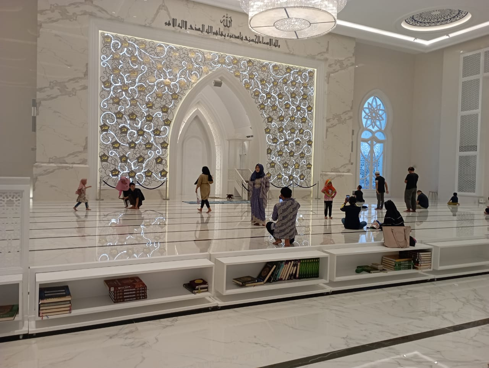
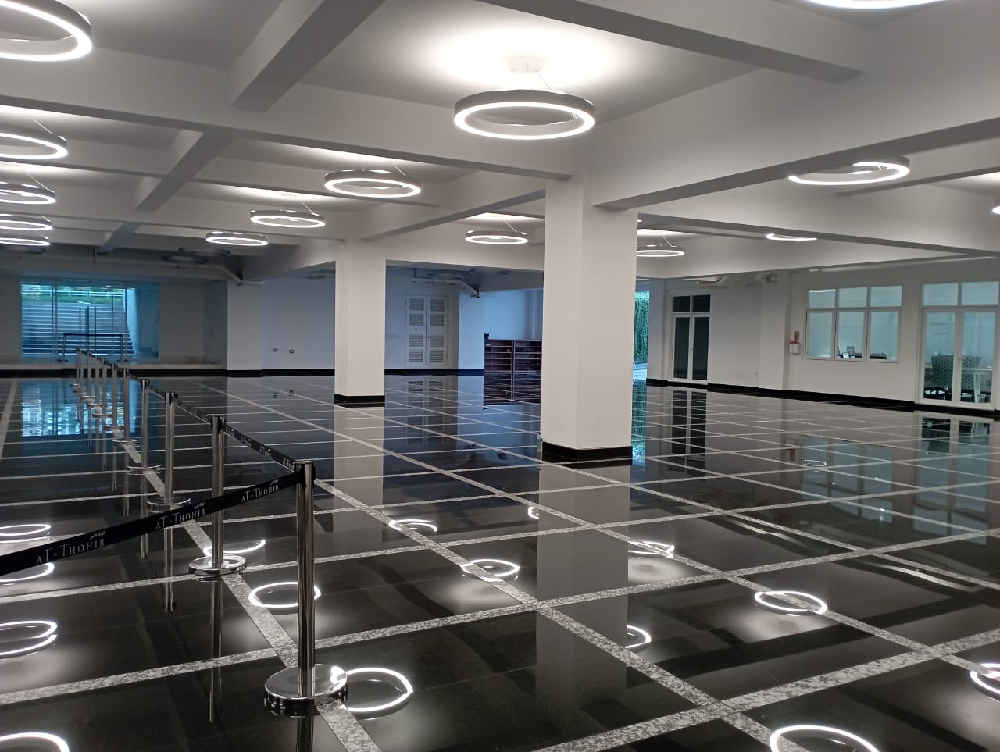

Masjid At- Thohir
Masjid At Thohir, terlihat memancarkan cahaya pada malam hari. Hal itu berkat adanya belasan lampu martin yang ada di setiap sudut masjid. Saat malam tiba, lampu-lampu itu diaktifkan dan akan menembakkan cahaya warna-warni. Bila diamati dari jauh masjid At Thohir jadi terlihat bercahaya.
"lampu (martin) itu yang memberi warna-warni di masjid sehingga dengan jumlah yang banyak seolah-olah tembok masjid ini berwarna padahal dia ditembak lampu,"
Ada juga aula yang cukup luas di lantai dasar masjid. Aula ini dapat digunakan pengunjung untuk beristirahat, seperti makan bersama keluarga. Lampu-lampu di atas dipantulkan oleh lantai marmer hitam menjadi keindahan tersendiri aula ini.
Masjid At Thohir juga dilengkapi amphitheater sebagai tempat pertunjukan di luar ruangan. Tersedia bangku-bangku memanjang ke atas yang menghadap langsung ke panggung di bawah sebagai tempat pertunjukan. Menurut Fauzi, amphiteater tersebut dapat digunakan sebagai tempat pertunjukan musik atau bisa juga sebagai tempat dakwah outdoor.
Bagi pengunjung yang kehabisan baterai gawainya saat mengunjungi At Thohir, tidak perlu panik dan mencari colokan di sekitar masjid. Karena Masjid At Thohir menyedikan mesin penyewaan power bank (recharge balance). Pengunjung tinggal mengunduh aplikasi recharge, kemudian top up, setelah itu tinggal mengikuti arahan dari mesin tersebut.